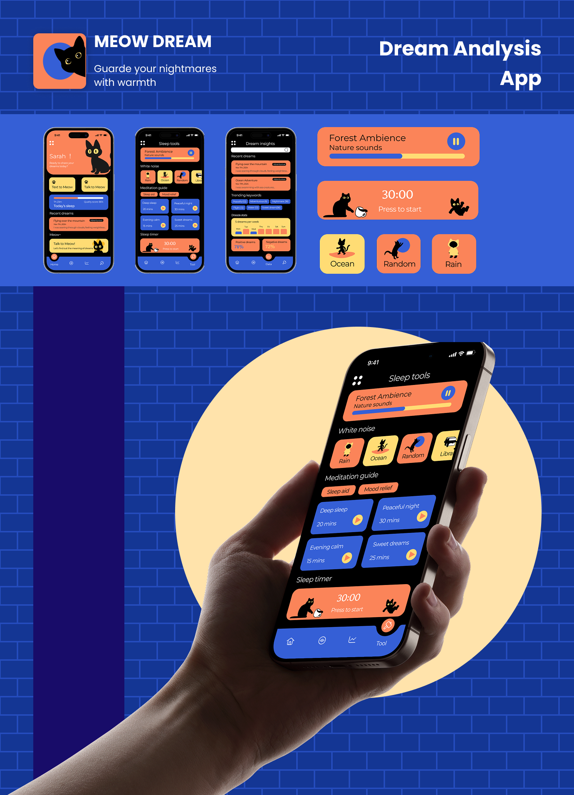
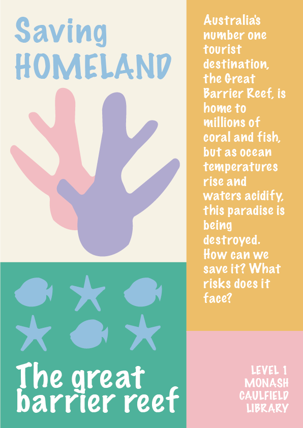
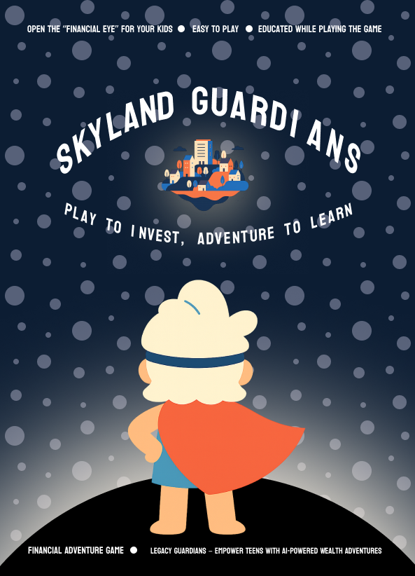

Poster Archive
A living collection of poster work spanning editorial campaigns, cultural events, and speculative briefs — exploring type as image and constraint as creative method.



Back to start
Onco →
A living collection of poster work spanning editorial campaigns, cultural events, and speculative briefs — exploring type as image and constraint as creative method.


